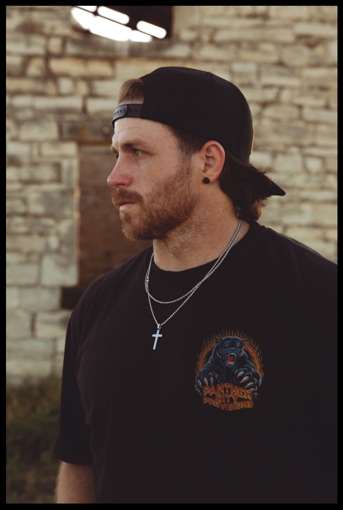

Look Who It Is Podcast • Windrow Studio
Kendall Eugene
Look Who It Is Podcast Guest

Kendall Eugene joins Dane Engle on Look Who It Is to talk about building a music career without going all in full time. From writing songs after long days of work to balancing real life responsibilities with creative ambition, Kendall shares what it looks like to chase music in a more grounded way. He breaks down the tension between wanting to fully commit and knowing the timing is not there yet, along with the discipline it takes to keep showing up and writing anyway. The conversation focuses on the reality of building something slowly and the long-term goal of turning music into something sustainable.
About Look Who It Is
Look Who It Is is a podcast documenting how musicians actually build and sustain careers. Hosted by Dane Engle, the show focuses on honest conversations with artists, producers, and songwriters working in today's music industry.